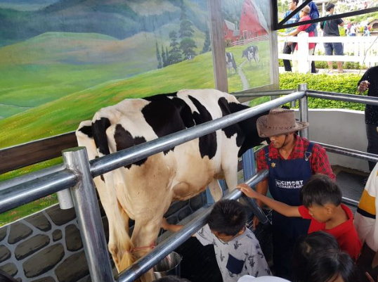

Galeri Foto
Keseruan dan keindahan Cimory dalam jepretan kamera



×

Destinasi wisata keluarga yang menyenangkan dan edukatif
Cimory Dairyland Puncak merupakan destinasi wisata edukasi yang terletak di kawasan Puncak, Bogor. Tempat ini menawarkan pengalaman belajar tentang proses pembuatan susu dan produk turunannya secara langsung. Pengunjung dapat melihat peternakan sapi perah, proses pengolahan susu, dan berbagai wahana edukatif lainnya.
Didirikan pada tahun 2008, Cimory Dairyland telah menjadi tujuan favorit wisata keluarga yang ingin memberikan pengalaman edukatif sekaligus rekreasi bagi anak-anak dan orang dewasa.
Cimory Riverside adalah cabang dari Cimory yang berlokasi di tepi sungai dengan suasana yang lebih sejuk dan asri. Tempat ini menawarkan pengalaman bersantai sambil menikmati hidangan lezat dengan pemandangan sungai yang mengalir.
Dibuka pada tahun 2015, Cimory Riverside menjadi alternatif bagi pengunjung yang ingin menikmati suasana alam yang lebih tenang namun tetap bisa menikmati produk-produk Cimory yang berkualitas.
Keseruan dan keindahan Cimory dalam jepretan kamera
Informasi lengkap untuk merencanakan kunjungan Anda
| Kategori | Weekday | Weekend/Libur |
|---|---|---|
| Dewasa | Rp 25.000 | Rp 35.000 |
| Anak (3-12 tahun) | Rp 15.000 | Rp 25.000 |
| Paket Keluarga (2 dewasa + 2 anak) | Rp 70.000 | Rp 100.000 |
| Rombongan (min. 20 orang) | Rp 20.000/orang | Rp 30.000/orang |
| Kategori | Weekday | Weekend/Libur |
|---|---|---|
| Dewasa | Rp 20.000 | Rp 30.000 |
| Anak (3-12 tahun) | Rp 10.000 | Rp 20.000 |
| Paket Keluarga (2 dewasa + 2 anak) | Rp 50.000 | Rp 80.000 |
| Rombongan (min. 20 orang) | Rp 15.000/orang | Rp 25.000/orang |
Dapatkan diskon dan penawaran spesial untuk kunjungan Anda!
Temukan kami dengan mudah
Jl. Raya Puncak Gadog No.KM 77, Leuwimalang, Kec. Cisarua, Kabupaten Bogor, Jawa Barat 16750
Jl. Raya Puncak, Cisarua, Kec. Cisarua, Kabupaten Bogor, Jawa Barat 16750
Apa kata mereka tentang pengalaman di Cimory
Rencanakan kunjungan Anda dengan mudah
Untuk pengalaman kunjungan yang lebih nyaman, kami menyarankan untuk melakukan reservasi terlebih dahulu, terutama untuk kunjungan rombongan atau pada akhir pekan dan hari libur.
+62 812-3456-7890
info@cimory-tourism.com